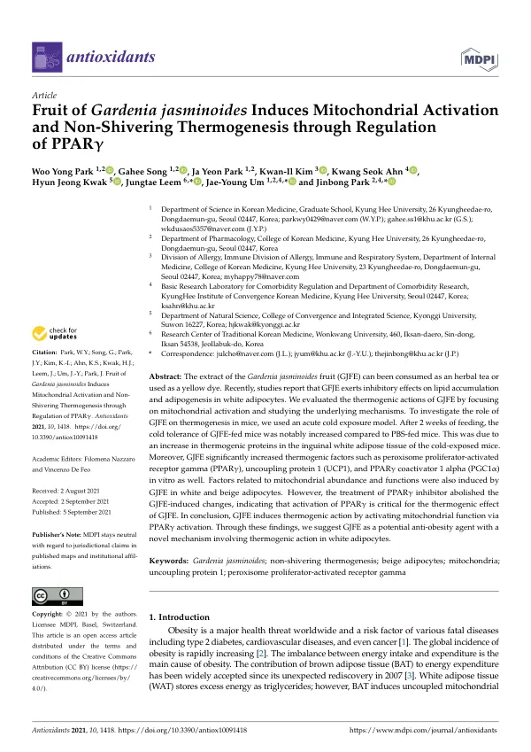

Fruit of Gardenia jasminoides Induces Mitochondrial Activation and Non-Shivering Thermogenesis through Regulation of PPARγ
Park WY, Song G, Park JY, Kim KI, Ahn KS, Kwak HJ, Leem J, Um JY, Park J
Antioxidants 10(9):1418

첫 장 · 오픈액세스First page · open access
논문 소개Summary
치자 열매는 허브차로 마시기도 하고 노란 염료로도 쓰이는 약재입니다. 백색지방세포에서 지방 축적과 지방생성을 억제한다는 보고가 있었는데, 이 연구는 그 작용을 열생성 쪽에서 다시 보았습니다. 지방을 덜 쌓는 것과 쌓인 것을 태우는 것은 다른 일이기 때문입니다.
생쥐에게 치자 추출물을 2주 동안 먹인 뒤 급성 한랭 노출 모델에 넣었습니다. 치자를 먹인 생쥐는 대조군보다 추위를 뚜렷하게 잘 견뎠고, 그 이유는 서혜부 백색지방의 열생성 단백질이 늘어난 데 있었습니다. 세포 실험에서도 치자 추출물은 열생성의 핵심 인자인 페록시좀 증식체 활성화 수용체 감마와 짝풀림 단백질 1, 그리고 그 보조활성자를 유의하게 늘렸습니다. 미토콘드리아의 양과 기능에 관여하는 인자들도 백색지방세포와 베이지색지방세포에서 함께 늘었습니다.
여기까지는 관찰입니다. 이 연구가 한 걸음 더 간 것은 그다음입니다. 페록시좀 증식체 활성화 수용체 감마의 억제제를 함께 처리하자 치자가 만들어 낸 변화가 모두 사라졌습니다. 이 수용체의 활성화가 치자의 열생성 작용에 필수적이라는 뜻입니다. 어떤 것이 함께 늘어났다는 관찰과, 그것을 막으면 효과가 사라진다는 확인은 근거의 무게가 다릅니다.
한계는 분명합니다. 생쥐와 배양 세포에서 본 결과이므로 사람에게 그대로 옮길 수 없습니다. 얼마를 얼마 동안 먹어야 하는지도 이 연구가 정해 주지 않습니다.
이 논문은 같은 연구진이 비만 처방의 기전을 파고든 일련의 작업 가운데 하나입니다. 복합 처방을 통째로 본 연구가 있고, 이렇게 한 가지 약재를 떼어 내어 어느 수용체를 거치는지까지 확인한 연구가 있습니다. 처방이 듣는다면 그 안의 무엇이 어떤 길로 듣는지를 묻는 순서입니다.
The fruit of Gardenia jasminoides is consumed as a herbal tea and used as a yellow dye. Reports had shown that it inhibits lipid accumulation and adipogenesis in white adipocytes; this study looked again at that action from the side of thermogenesis, since storing less fat and burning what is stored are different things.
Mice were fed Gardenia fruit extract for two weeks and then placed in an acute cold exposure model. Those fed the extract tolerated cold notably better than controls, and the reason lay in increased thermogenic proteins in their inguinal white adipose tissue. In vitro, the extract significantly increased key thermogenic factors — peroxisome proliferator-activated receptor gamma, uncoupling protein 1 and PPARγ coactivator 1 alpha. Factors governing mitochondrial abundance and function also rose in both white and beige adipocytes.
Thus far this is observation. Where the study goes further is next: treatment with a PPARγ inhibitor abolished all the changes the extract had produced, meaning that activation of this receptor is essential to its thermogenic effect. Observing that something rose alongside, and confirming that blocking it removes the effect, carry different evidential weight.
The limits are plain. These are results in mice and cultured cells and cannot be carried across to people, and the study does not establish how much should be taken, or for how long.
The paper is one of a series in which the same group has worked at the mechanisms of anti-obesity prescriptions. One study takes a whole multi-herb formula; this one separates out a single herb and traces which receptor it works through. If a formula works, the next question is what within it works, and by which route.
인용Cite
Park WY, Song G, Park JY, Kim KI, Ahn KS, Kwak HJ, Leem J, Um JY, Park J. Fruit of Gardenia jasminoides Induces Mitochondrial Activation and Non-Shivering Thermogenesis through Regulation of PPARγ. Antioxidants. 2021;10(9):1418. doi:10.3390/antiox10091418